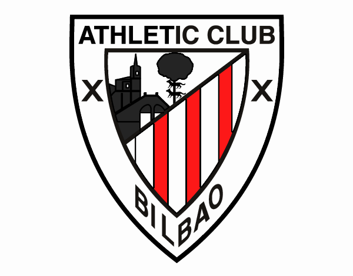

El Athletic Club, popularmente conocido también como Athletic de Bilbao o simplemente Athletic, es un club de fútbol de la villa de Bilbao, País Vasco, España. Fue fundado en 1898 y es, junto al Real Madrid Club de Fútbol y al Fútbol Club Barcelona, el único club que ha disputado todas las ediciones de la Primera División de España desde su creación en 1928. A su vez, es uno de los cuatro únicos clubes profesionales de España que no es una sociedad anónima deportiva, de manera que el gobierno del club recae en sus socios
 Volver al inicio